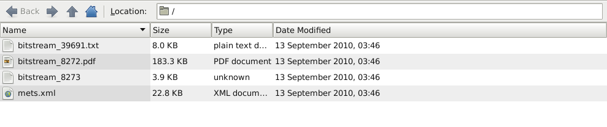
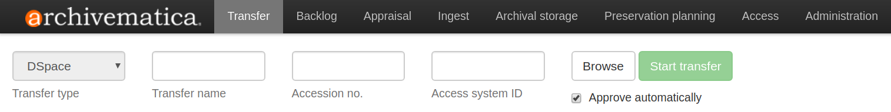
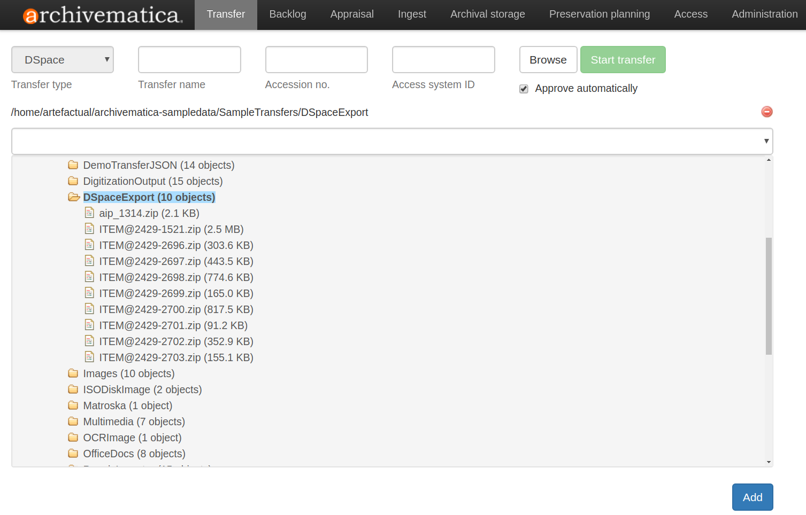

DSpaceエクスポート¶
Archivematica を使用すると、DSpace リポジトリの"ダークアーカイブ"を構築できます。つまり、DSpace がユーザーのデポジットおよびアクセスシステムのままである一方で、バックエンド保存機能を提供できます。DSpace からエクスポートされた素材は、Archivematica パイプラインがアクセスできる 転送元の場所 に配列する必要があります。
このページ上
DSpaceバージョンの互換性¶
Archivematica は、DSpace 1.7.x からのエクスポートを使用してテストされます。インジェストは、DSpace 1.8.x からのエクスポートではテストされません。ただし、1.7.x と 1.8.x の間で DSpace AIP エクスポート構造に変更はありませんでした。したがって、パフォーマンスは同一であることが予想されます。
DSpaceエクスポート構造¶
Archivematica は、各 DSpace アイテムが ZIP ファイルとしてパッケージ化される標準の DSpace エクスポートを想定しています。通常、DSpace アイテムの ZIP ファイルには、アップロードされたオブジェクトに加えて、ライセンスファイル、METS ファイル、および場合によっては OCR テキストファイルが含まれます。
{kind=link}

上の写真の例では、DSpace アイテムは4つのファイルを含んでいます：
bitstream_39691.txtOCR テキストファイル。bitstream_8272.pdf：DSpaceに寄託されたオリジナルのオブジェクト。bitstream_8273：ライセンスファイル。mets.xml：アイテムの METS ファイル。
Archivematica は、DSpace METS ファイルの一部を再利用して、AIP 用に生成された METS ファイルを設定します。
アイテムを1つずつ転送するか、ディレクトリ内に配列して一度に複数のアイテムを転送できます。DSpaceインスタンスのセットアップとエクスポートパラメーターによって、エクスポートは以下の例のように、コレクションレベルの説明だけでなく、複数の個々のアイテムを含めることができます。
DSpaceエクスポートの処理¶
エクスポートした素材を、Archivematica パイプラインがアクセスできる 転送元の場所 に配列します。
Archivematica の [転送] タブで、 転送タイプ ドロップダウンメニューにより DSpace 転送タイプを選択します。

ブラウズ ボタンを使用して DSpace エクスポートを見つけ、個々のアイテムまたはアイテムのコレクションを選択します。以下のスクリーンショットでは、アイテムのコレクションが選択されています。 追加 をクリックします。

アイテムのコレクションを選択した場合は、 転送名 ボックスに転送名を入力します。
個々の DSpace アイテムを選択した場合は、転送名は必要ありません。アイテム名 (例：
ITEM@2429-1521.zip) が転送名として使用されます。転送開始 をクリックし、必要に応じて処理します。
{kind=link}
{kind=link}
DSpace AIP METSファイル¶
AIPの各オブジェクトには、2つのDSpace固有の説明メタデータセクション（dmdSec）があります。最初のセクションは、DSpaceからエクスポートされたオリジナルのmets.xmlファイルの説明メタデータと権利メタデータへのXポインタを含んでいます。
<mets:dmdSec ID="dmdSec_2">
<mets:mdRef LABEL="mets.xml-Group-2f7c645f-a0b0-4d36-9933-0c8d9e47784b" xlink:href="objects/ITEM_2429-2700.zip-2020-02-07T00_26_40.346055_00_00/mets.xml" MDTYPE="OTHER" LOCTYPE="OTHER" OTHERLOCTYPE="SYSTEM" XPTR="xpointer(id('dmdSec_366 dmdSec_367'))"/>
</mets:dmdSec>
2 番目の dmdSec は、ハンドルを識別子として使用して、DSpace オブジェクトとそのコレクションの間の親子関係を反映します：
<mets:dmdSec ID="dmdSec_3">
<mets:mdWrap MDTYPE="DC">
<mets:xmlData>
<dcterms:dublincore xmlns:dc="http://purl.org/dc/elements/1.1/" xmlns:dcterms="http://purl.org/dc/terms/" xsi:schemaLocation="http://purl.org/dc/terms/ https://dublincore.org/schemas/xmls/qdc/2008/02/11/dcterms.xsd">
<dcterms:isPartOf>hdl:2429/1314</dcterms:isPartOf>
<dc:identifier>hdl:2429/2700</dc:identifier>
</dcterms:dublincore>
</mets:xmlData>
</mets:mdWrap>
</mets:dmdSec>
AIP METSファイルのファイルセクション（ fileSec ）では、AIPに含まれる様々な種類のDSpaceファイルに関する情報を見ることができます。それらはファイルグループ（ fileGrp ）でソートされています： original submissionDocumentation （オリジナルのDSpace mets.xmlファイル）、 preservation （保存のために素材が正規化された場合）、 license 、 text/ocr 。
<mets:fileSec>
<mets:fileGrp USE="original">
<mets:file GROUPID="Group-2f7c645f-a0b0-4d36-9933-0c8d9e47784b" ID="file-2f7c645f-a0b0-4d36-9933-0c8d9e47784b" ADMID="amdSec_2" DMDID="dmdSec_2 dmdSec_3">
<mets:FLocat xlink:href="objects/ITEM_2429-2700.zip-2020-02-07T00_26_40.346055_00_00/bitstream_8266.pdf" LOCTYPE="OTHER" OTHERLOCTYPE="SYSTEM"/>
</mets:file>
</mets:fileGrp>
<mets:fileGrp USE="submissionDocumentation">
<mets:file GROUPID="Group-2f7c645f-a0b0-4d36-9933-0c8d9e47784b" ID="file-6aeb8547-e866-4d47-ad11-35a1b85fe8e8" ADMID="amdSec_4">
<mets:FLocat xlink:href="objects/ITEM_2429-2700.zip-2020-02-07T00_26_40.346055_00_00/mets.xml" LOCTYPE="OTHER" OTHERLOCTYPE="SYSTEM"/>
</mets:file>
<mets:file GROUPID="Group-bd549305-08b7-4173-b594-d1acf2f23bdd" ID="file-bd549305-08b7-4173-b594-d1acf2f23bdd" ADMID="amdSec_5">
<mets:FLocat xlink:href="objects/submissionDocumentation/transfer-ITEM_2429-2700-6c06573d-069d-4092-a98a-fbfbc29ee5fa/METS.xml" LOCTYPE="OTHER" OTHERLOCTYPE="SYSTEM"/>
</mets:file>
</mets:fileGrp>
<mets:fileGrp USE="license">
<mets:file GROUPID="Group-2f7c645f-a0b0-4d36-9933-0c8d9e47784b" ID="file-06ce97e6-edfe-4a51-bec3-5cc7bed9e0b1" ADMID="amdSec_3">
<mets:FLocat xlink:href="objects/ITEM_2429-2700.zip-2020-02-07T00_26_40.346055_00_00/bitstream_8267" LOCTYPE="OTHER" OTHERLOCTYPE="SYSTEM"/>
</mets:file>
</mets:fileGrp>
<mets:fileGrp USE="text/ocr">
<mets:file GROUPID="Group-2f7c645f-a0b0-4d36-9933-0c8d9e47784b" ID="file-e20b2cb6-71b4-4323-b6c7-84c431c5e88f" ADMID="amdSec_1">
<mets:FLocat xlink:href="objects/ITEM_2429-2700.zip-2020-02-07T00_26_40.346055_00_00/bitstream_40314.txt" LOCTYPE="OTHER" OTHERLOCTYPE="SYSTEM"/>
</mets:file>
</mets:fileGrp>
</mets:fileSec>